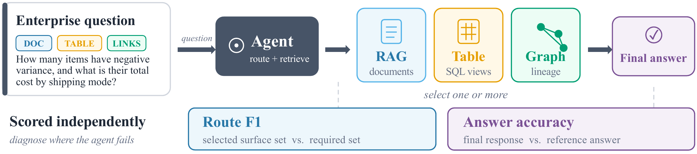
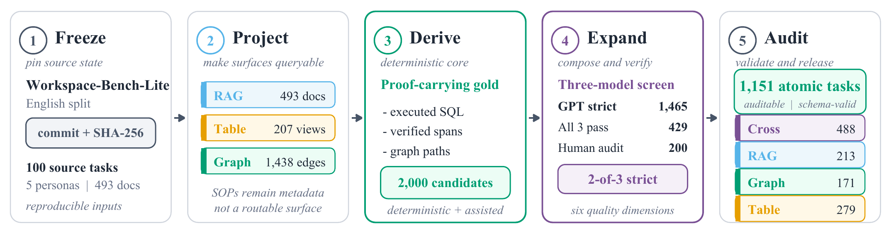
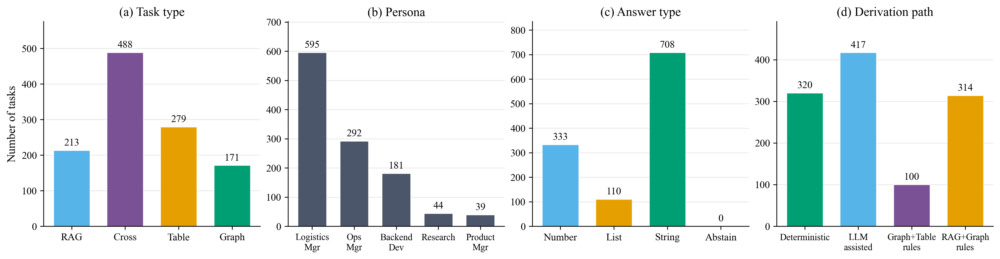
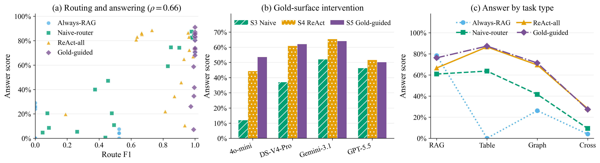

01
DOC
Documents / RAG
Narrative facts, policies, reports, and exact evidence spans.
“Which region does the report specify?”
Enterprise agents · Multi-surface reasoning
WorkSurface-Bench evaluates routing, evidence acquisition, answer correctness, and efficiency across documents, structured tables, and dependency graphs.
What is the total sales amount across the Asia Pacific region?
The benchmark
Enterprise questions rarely arrive with the correct tool already named. WorkSurface-Bench makes surface selection an explicit, separately scored part of agent evaluation.
Narrative facts, policies, reports, and exact evidence spans.
Executable calculations over canonical DuckDB views.
File lineage, prerequisites, and workspace relationships.
The benchmark separates choosing a surface from using it, revealing whether a failure came from routing, evidence acquisition, or downstream computation and synthesis.

Construction

Lock source commits and file hashes.
Build documents, DuckDB views, and dependency graphs.
Attach gold answers, evidence, and required surfaces.
Deterministic checks, three-model screening, and three human annotators.
Dataset composition
The release retains every task that passes strict quality and surface-necessity checks rather than forcing an artificial uniform distribution.

Evaluation
Did the trace use all and only the necessary surfaces?
Did the agent acquire the gold-bearing artifacts and records?
Did the final response match the executable or traceable gold?
How economically did the agent use its task-specific budget?
0.35 A + 0.30 E + 0.25 R + 0.10 Q
Results
Four model backbones are tested under six matched agent settings, from closed-book answering to gold-constrained tool access.
Gold-constrained agents reach 98.7–99.8 Route F1, while Answer remains 56.1–75.3. Correct selection leaves substantial evidence, computation, and synthesis work unresolved.

Get started
Task data, scored runs, human-audit votes, canonical resources, and official trajectories are released on Hugging Face.
from datasets import load_dataset
tasks = load_dataset(
"lhpku20010120/WorkSurface-Bench",
"tasks",
split="test",
)